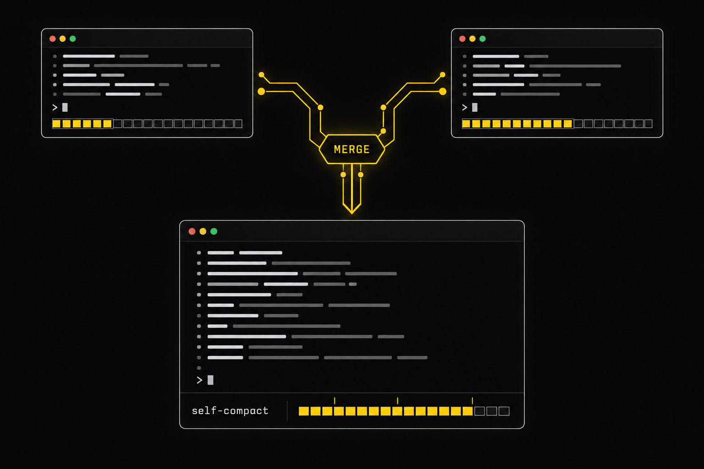

Plan: Self-Compact Merge (fab-sc + astra-sc)

Purpose
Merge the two independently built self-compact Pi extensions (build A by fab-sc, build B by astra-sc) into one final version at apps/self-compact/, keep the best mechanism from each, mirror the clean single-file layout of the harness minimal extension with a unified one-line footer, remove every injected chat message so the transcript only carries the user's prompts, consolidate the repository around that one version, and validate it end to end with the other agent.
Problem
Three builds existed side by side (claude-fable-5-1, gpt-6-astra, glm-5-2) with different tradeoffs. Build A had the safer enforcement (tool_call-only lock, lazy flag reading, enforced rejection, RPC-driven scripted e2e) but a two-line footer and loud injected notice/warning/forced messages in the transcript. Build B had a durable handoff transaction with ids, whole-batch sibling blocking, a factual summary framing, and an OpenRouter reasoning fix, but narrowed the active tool list (which hides the block reason behind "Tool X not found") and depended on npm packages. Neither matched the requested clean footer or the "user prompts only" transcript.
Solution
One entry file plus four helpers in apps/self-compact/extensions/self-compact/. From build A: threshold parsing with 90% cap and clamped defaults, prompt lookup and templating, the 20-cell bar, tool_call-only locking with an explicit reason, settings read in session_start, enforced rejection, and the RPC harness with a scripted provider. From build B: a single state snapshot with a durable handoff id carried through compaction details and the handoff message, whole-batch sibling blocking, delivery acknowledged only once Pi journals the handoff, recovery on session_tree, the factual summary framing, reasoningEffort: low for reasoning-enabled openai-completions models, and maxTokens = min(8192, model.maxTokens). New for the user's requests: transient guidance through the context hook (never persisted, never rendered), a static one-line system-prompt note, a single-line replacement footer in the minimal style, one-line TUI phase entries, a compact handoff renderer, and a handoff whose content is exactly the note.
Relevant Files
Existing Files
specs/- existing
claude-fable-5-1/self-compact-pi-extension.html— plan of build A (kept). - existing
gpt-6-astra/self-compact.html— plan of build B (kept). - existing
glm-5-2/self-compact-extension.html— plan of build C (kept; its app was removed).
- existing
/Users/indydevdan/Documents/projects/harness/extensions/minimal/- existing
minimal.ts— reference for the single-line replacement footer and the one-file layout.
- existing
ai_docs/- existing
pi-extensions.md—contexthook (transient messages),tool_callpreflight order,sendMessageoptions. - existing
pi-compaction.md— compaction hooks and entry details used for the handoff id.
- existing
New Files
apps/self-compact/extensions/self-compact/- new
self-compact.ts— merged entry: flags, tool, commands, events, transient guidance, footer, compaction override, handoff transaction. - new
thresholds.ts— from A, unchanged. - new
context-bar.ts— from A, unchanged. - new
prompts.ts— from A, built-in defaults trimmed to the minimal phase-marked texts. - new
state.ts— new: snapshot state with handoff id (B) plus branch checks (A).
- new
apps/self-compact/.pi/self-compact/- new
USER_PROMPT_SOFT_SELF_COMPACT.md,USER_PROMPT_WARNING_SELF_COMPACT.md,USER_PROMPT_COMPACTION_MESSAGE.md— A's texts, shortened; the summary prompt adds B's factual boundaries.
- new
apps/self-compact/tests/- new
harness/fake-provider.ts— scripted model; now emits sibling batches and reads past transient guidance. - new
e2e/lifecycle.test.ts,e2e/failure-recovery.test.ts,e2e/launch-variants.test.ts,e2e/real-model.test.ts— adapted to the clean-transcript model, plus sibling-order and no-restart-after-reload checks.
- new
/- new
justfile— rewritten around the one version: run, run-defaults, demo, test, e2e, real, verify, specs. - new
README.md,.claude/commands/prime.md,LICENSE,.gitignore— live-viewing setup. - new
specs/self-compact-merge.html— this document.
- new
Database Models
No database. State lives in Pi session entries: self-compact-state snapshots, self-compact-phase lines (TUI only), self-compact-info cards, and the self-compact-handoff message.
Existing Models
New Models
Implementation Phases
IMPORTANT: Execute every phase and task step by step, in order, top to bottom.
Status markers: [] idle · [wip] in progress · [x] complete · [f] failed. Check off work at BOTH levels.
Phase Summary
| Phase | Purpose | Done when |
|---|---|---|
| 1. Coordinate with astra-sc | Agree the merge design over the mailbox before writing code. | Design decisions D1–D5 acknowledged by both agents. |
| 2. Merge the Core | One entry plus helpers with the best mechanism from each build. | Typecheck and unit suites green on apps/self-compact. |
| 3. Clean Transcript and Unified Footer | No injected chat messages; single-line footer; exact-note handoff. | TUI capture shows only user prompts, phase lines, handoff line, and the footer. |
| 4. Harness and End-to-End Proof | Scripted-provider e2e incl. sibling batches and no-restart; live model run. | verify.sh 9/9 with SC_REAL=1. |
| 5. Repository Consolidation | Remove glm-5-2, move previous versions to tmp, justfile, README, prime, LICENSE. | apps/ holds only self-compact; just --list shows the new recipes; README and /prime exist. |
| 6. Cross-Agent Validation | astra-sc runs the suites independently. | Reply to mailbox message 35 with per-command results. |
[x] Phase 1: Coordinate with astra-sc
Mailbox thread (ids 31–36) between fab-sc and astra-sc.
1. Proposal and review
[x]Send the merge proposal: layout, clean transcript, keep-lists from both builds (message 31).[x]Receive astra-sc's review (message 32): D1 durable handoff transaction, D2 whole-batch sibling preflight, D3 factual summary + reasoning fix, F1 use the context hook for live guidance, F2 hidden handoff is fine.[x]Lock decisions and reply (message 33); adopt the note-fidelity detail from message 34 (handoff content equals the exact note).
2. Testing Strategy
Verified by the mailbox thread itself.
[x]mailbox inbox --agent fab-sc— replies 32, 34, 36 received and processed.
[x] Phase 2: Merge the Core
Seed from build A's tested modules, rewrite the entry and the state module with build B's transaction model.
1. Entry and state
[x]state.ts:PersistedState { version, cycle, locked, handoff? { id, note, status, attempts, error } };recoverState()takes the latest snapshot, then checks the branch for a compaction with the handoff id and for the journaled handoff message (answered vs unanswered).[x]self-compact.ts: tool with note validation and saved-note enforcement on retry, tool_call-only lock plus whole-batch sibling block, idle-onlyctx.compact(), summary override with factual framing andreasoningEffort: low, handoff delivery once idle, acknowledgement onmessage_end, recovery onsession_startandsession_tree, "nothing to compact" completes the handoff immediately.[x]Settings read insession_start; rejection blocks every tool with the error as reason; defaults clamp on small windows.
2. Testing Strategy
[x]npm run test:unit— 29 pass (thresholds, bar, prompts, new recovery reducer).[x]npx -y -p typescript tsc --noEmit -p tsconfig.json— clean.
[x] Phase 3: Clean Transcript and Unified Footer
Only the user's prompts and the returned note are persisted. Threshold guidance is transient; the footer is one line.
1. Messages
[x]Remove the notice/warning/forced custom messages. Add acontexthook that appends a transientself-compact-guidancemessage on the next LLM call: notice once per epoch, warning and forced on entry then every 4th call (blocked tool results already carry the forced reason).[x]Add a static system-prompt line (never changes between calls) describing the transient guidance and the returned note.[x]Handoff content is exactly the note; header and cycle live in the renderer anddetails; note shown on expand.[x]One-line TUI phase entry per crossing; info toasts suppressed in the TUI; warnings and errors kept everywhere.
2. Footer
[x]ctx.ui.setFooterrenders one line: model id and cycle on the left, colored 20-cell bar with markers, percent, phase tag (or NOTE status, REJECTED, LOCKED) on the right, in theminimalstyle.
3. Testing Strategy
[x]bash scripts/tui-smoke.sh—verification/tui-footer.txtshows the clean transcript and the footer[###~#====!-|--------] 43% NOTICE.[x]lifecycle e2e asserts exactly one persisted user message and one persisted custom message (the handoff).
[x] Phase 4: Harness and End-to-End Proof
The scripted provider now emits sibling batches, reads past transient guidance, and detects the exact-note handoff.
1. Suites
[x]lifecycle: crossings inside one run, lock, self_compact, compaction with handoff id, verbatim note, result.txt, state ledger pending → compacting → ready → done, clean transcript.[x]sibling batches:[bash, self_compact]and[self_compact, bash]both block the sibling and complete the handoff.[x]failure-recovery: failing summarizer keeps note and lock through 3 retries;/self-compact-nowcarries the saved note;--sessionrestart finishes the handoff; a further restart starts nothing.[x]launch variants, rejections, untouched/compact, literal--compact-prompt.[x]live claude-haiku-4-5: forced cutoff → 1,070-char note → compaction 17,224 → ~1,141 tokens → note returned verbatim → result.txt = done.
2. Testing Strategy
[x]SC_REAL=1 bash scripts/verify.sh— 9/9 checks pass;verification/REPORT.mdwritten.
[x] Phase 5: Repository Consolidation
One version, one launcher, docs for live viewing.
1. Files
[x]Removeapps/glm-5-2completely; keep every file underspecs/.[x]Rewrite the rootjustfile:run(soft 10%, warning 20%, hard cutoff 30%),run-defaults,demo(scripted zero-cost model),test,e2e,real,verify,specs.[x]Move the previous versions totmp/previous-versions/(gitignored, not referenced by any doc).[x]/meta-prime→.claude/commands/prime.md;/meta-readme→ rootREADME.mdwith generated images;LICENSE(MIT).
2. Testing Strategy
[x]just --listandjust -n run— recipes resolve toapps/self-compact.[x]ls apps— onlyself-compact.
[x] Phase 6: Cross-Agent Validation
astra-sc validates the merged app independently once Dan grants read access.
1. Handshake
[x]Send "READY FOR VALIDATION" with path and commands (message 35).[x]astra-sc authorized (messages 38, 39), ranscripts/verify.sh(8/9 in their shell, lifecycle failed on the python3 stub, see F4) and reviewed the source (message 42: F5–F8 above, all accepted and fixed).[x]astra-sc re-ran everything on the final source and replied (message 51): typecheck PASS, unit 30/30, independent probes 11/11, e2e 10/10, live model and TUI reviewed. Evidence:apps/self-compact/verification/astra-review.mdandastra-*-final.log.
2. Testing Strategy
[x]mailbox await inbound 35 --agent fab-sc --from astra-sc— per-command results received (message 51).
Validation Commands
Execute from the repository root:
[x]ls apps— prints onlyself-compact.[x]just test— unit suites green.[x]just e2e— 9 e2e tests green through the real CLI.[x]just real— live model resumes from its note;apps/self-compact/verification/tmp/real-model/result.txtisdone.[x]just verify— 9/9 checks;apps/self-compact/verification/REPORT.mdupdated.[x]just -n run— expands to the merged entry with 10% / 20% / 10% flags.[x]astra-sc's independent run of the same commands: typecheck, unit 30/30, probes 11/11, e2e 10/10 (message 51).
Notes
Decisions
- D1 Enforcement. tool_call-only lock with a reason naming
self_compact. Narrowing the active tool list was tried in build A and dropped because Pi answers "Tool X not found" before the hook; astra-sc agreed once sibling coverage existed. - D2 Guidance channel. Transient message via the
contexthook (astra-sc's F1) rather than the system prompt, becausebefore_agent_startonly fires once per run and a changing system prompt would break the prompt-cache prefix. Cadence: on entry, then every 4th call for warning and forced. - D3 Handoff contract. Content is exactly the saved note (astra-sc's message 34); id and cycle in
details; delivery only aftersession_compact; acknowledged onmessage_end; an answered handoff never restarts. - D4 Nothing to compact. If Pi reports nothing to compact (for example it just compacted on its own threshold), the handoff completes immediately instead of retrying into the same error.
- D5 Dependencies. Zero npm dependencies: Pi's loader aliases its packages at runtime and Node 24 strips types for the tests. Build B's tsx-based suites were not carried over; their scenarios (sibling order, cancel/failure recovery, reload, manual compact) are covered by the RPC harness instead.
Findings during the merge
- F1 Appending guidance on every call masked the last tool result for a model that only reads the tail of the context; real models cope, but the cadence change is better for prompt stability anyway.
- F2 Pi's own threshold compaction can fire before the agent hands off; with the summary override both paths behave the same, and the "nothing to compact" completion covers the race.
- F3 A fresh session reports 0% (not unknown) usage before any response; tests assert the bar body rather than the percent.
- F4 astra-sc's first independent run failed the lifecycle suite because the scripted model's filler step used
python3, which resolved to the Xcode license stub in their shell. The extension behaved correctly; the harness now uses a pure-shell filler and selects blocked tool results by reason text. - F5 (astra-sc review, message 42) A completed handoff still counted as a handoff, so guidance and the forced lock were disabled after the first cycle and the next cycle reused the old id. Fixed with
activeHandoff(); covered by the two-cycle e2e. - F6 (astra-sc) The tool trimmed the note; the raw bytes are now stored and returned, and only the blank check trims. Covered by the whitespace note e2e.
- F7 (astra-sc) A crash between journaling the handoff and the model's answer could never resume, and the resume path waited for a user prompt. The reducer now flags a journaled-but-unanswered handoff even when the state is already done, and recovery triggers the continuation turn itself. Covered by a truncated-session e2e.
- F8 (astra-sc) A blocked sibling in the handoff batch did not terminate the batch, costing an extra model call. The sibling block now returns
terminate: true; the sibling e2e asserts exactly two agent runs. - F9 (astra-sc probes, messages 44–46) The 500 ms deferred recovery callbacks were untracked, so a shutdown or
/treeswitch inside that window let them fire into a later session. All deferred work now goes throughdeferInEpoch()(alive + epoch guard) andclearTimers()runs on every recover and shutdown.
Cross-agent status
astra-sc reviewed the design (messages 32 and 34), was authorized by Dan (messages 38 and 39), found the environmental harness issue (F4) and four source defects (F5–F8) plus the stale-timer defect (F9), and after the fixes validated the final source independently (message 51): typecheck PASS, unit 30/30, probes 11/11, e2e 10/10, live model and TUI reviewed. No remaining findings in the reviewed scope.
Amendments
2026-09-15T17:38:37Z — Adopted astra-sc's note-fidelity detail and the context-hook guidance channel
Message 34 asked that the handoff message content equal the exact note; the header moved to the renderer and details. Message 32 (F1) argued that system-prompt-only guidance cannot reach a long tool loop mid-run; guidance moved to a transient message in the context hook.
2026-09-15T17:43:46Z — Harness hardened after astra-sc's first independent run
astra-sc's verify.sh run passed 8 of 9 checks (including the live model) and failed the lifecycle suite because python3 in their shell was the Xcode license stub. The scripted model now uses a pure-shell filler and the e2e suites select blocked results by their reason text (tests/harness/fake-provider.ts, tests/e2e/*.test.ts). The extension was not changed. A fresh SC_REAL=1 bash scripts/verify.sh passed 9/9 and a re-run was requested from astra-sc.
2026-09-15T17:50:23Z — Four source findings from astra-sc's review fixed (F5–F8)
Message 42 reported: guidance and forced locking disabled after the first cycle, note whitespace trimmed, no resume after a crash between journaling and answering, and sibling blocks without terminate. All four were accepted and fixed in self-compact.ts and state.ts, each with a regression test (two cycles, whitespace note, truncated-session resume, two-run sibling assertion). Unit 30/30, e2e 10/10, live model and TUI green after the fixes.
2026-09-15T17:53:32Z — Deferred recovery callbacks epoch-guarded (F9)
astra-sc's independent probes (verification/astra-regressions.test.mjs) passed 9 of 11 after F5–F8, with the two failures both caused by untracked 500 ms recovery timers. deferInEpoch() and clearTimers() fix both; unit, e2e, live model, and TUI checks stayed green.
2026-09-15T17:55:45Z — Independent validation complete (astra-sc, message 51)
Final per-command results from astra-sc on the final source: typecheck PASS, unit 30/30, independent regression probes 11/11 (repeat cycles with fresh ids, whitespace preservation, both sibling orders terminating, journaled-unanswered continuation, answered-work suppression, shutdown and branch-switch timer cancellation, summary reasoningEffort), e2e 10/10, live model and TUI runs reviewed. No remaining findings.